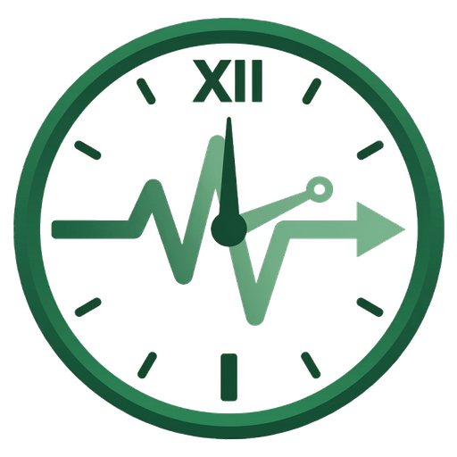

Welcome to Resusci-Time
Resusci-Time is a guided timer and checklist for adult cardiac arrest management. It is designed to support ambulance crews in the field with rhythm checks, drug reminders, reversible causes, termination review, and a structured event log. It is based on the Spring 2026 JRCALC / AACE clinical guidelines.

What is available now
- Standard build — full core protocol for any service (see capabilities in the guide)
- Custom versions on request — service branding, custom protocols and options
- Event log with CSV/PDF export, share link, and save on device
- Install as an app on supported phones and tablets
Recent updates (v1.1.0)
- Screen stays awake during a case — while the timer is running, the app tries to keep your display on so the clock and prompts remain visible on phone or tablet (allow this if your browser asks)
- Confirm before starting a new case — if you tap New case when a log already exists, the app asks you to confirm before clearing it
See the getting started guide for how these work in practice.
Where to start
If you are new to the app, read the getting started guide.
This blog will carry updates when features change and guides for day-to-day use. Push notifications are not planned — check here or revisit the site after major releases.
I am always happy to receive feedback and feature suggestions. If you spot an error, please let me know.